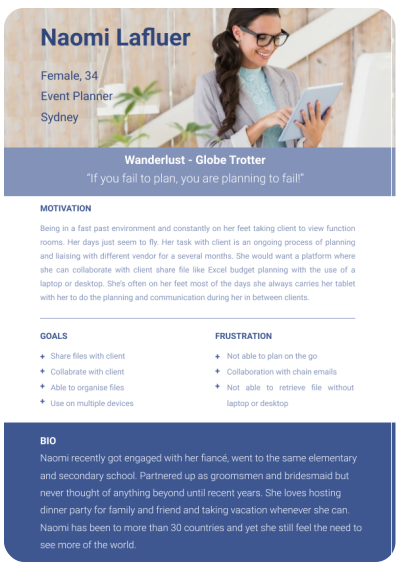

A cloud storage service for people on the go which not only houses documentation, and files that are created outside of technology, but also inside technology allowing users to write notes, create an array of documentation (from word doc, spreadsheets), share their items and the ability to collaborate in a file and chat in real time. Take a look at the final clickable prototype!
The world of Cloud Storage is full of competitors. From Google Drive, Dropbox to Microsoft OneDrive, each digital platform and syncing service delivers its own variation of convenience and productivity to keep content stored and accessible at any time. Despite this variety, frustrations remain over organization: some tools don't consistently save files into the correct folders; some requires a desktop application; others don't provide controls over how content can be saved or displayed.
Introducing Clink, a Software-as-a- Service web application providing effortless content management to solve the problem of digital disorganisation. Clink combines the ease of uploading documents to creating documents, the flexibility formatting notes in desktop, and real time collaboration. Whether it’s personal creativity or professional work Clink is no longer bound to one place. Clink makes it easy to add anything in seconds, keep things organized, and access content quickly and efficiently.
I created a user research survey to get know my perspective users preferences and habits regarding cloud storage usages, what could be done better with the cloud storage services that are currently available, and what new features would improve cloud storage experience. An online survey was conducted with 23 participants partaking the surveys.
I summarized the data and identified common user motivations, frustrations, and considerations.
From these results, I was beginning to see that users wanted a productivity tool that could streamline the organizational decision-making process but still provide options for more specific categorization.
I interviewed survey respondents to dig deeper into their responses and clarify my understanding of the problem and my potential solution. From these interviews, I identified three major user groups, which I developed into three personas.
All well established in their own careers - each persona had pain points that were clear frustrations we could use and build upon with the inclusion of the client requests.
Frustrations included:
These pain points of creation, organization, sharing, storing, saving and collaboration became our headings for navigation
Given the number of existing productivity services, I needed to take a closer look at potential competitors to identify how our product could provide the most value to our users. I focused my analysis on cloud storage heavyweights like Dropbox, OneDrive and Google Drive to perform a basic SWOT analysis. Since users' strongest desires were for better organization, examining the successes and faults of services built to house and handle vast quantities of data revealed insights and opportunities beyond just how to build a better interface for typing and storing files, notes and collaborative work.
After compiling a lengthy list of tasks that users would want to accomplish with my product, I prioritized those essential for a minimum viable product (creating and upgrading accounts, adding and viewing content) from the nice-to-haves (sharing and favoriting content, adding and managing collaborators).
I converted the users stories into user flows to visualize how the user would accomplish those stories with my product. Separate flows demonstrate how new and returning users would be welcomed into the platform. A combined flow for tasks within a dashboard took several iterations as I mapped out the smoothest paths for adding content, searching for specific items, and managing accounts. To solidify our navigation structure and content hierarchy, I drew up a sitemap before diving into the design of the actual product
I began my brainstorm with a word association exercise surrounding the idea of valuable items in a safe space. This eventually lead me to brand concepts Clink, defined linking, connection, cloud storage. For Clink I started off with chain linking and final choose the cloud shape with ‘C’ which stands for ‘Clink’ which also represent the purpose of the platform being a cloud storage. The branding is simple and professional.

A preference test was done for the there was a clear A winner with 80% selected. They feel that the typeface Nunito goes well with the logo icon, the consistency looks from the ‘cloud shape C’ flows perfectly with the Logo.
I transformed barebones sketches into a clickable prototype through rounds of exploring visual design, conducting usability testing, and iterating on user feedback.

To be able to share my mockups with a remote design partner more efficiently, I created several variations for the landing page and layouts for additional content pages, focused on iterating quickly and communicating ideas. Once the partner was on board with selected mockups, I moved into the next phase of concept development.
Using my sitemap and a list of project requirements as reference points, I built wireframes in Figma for our MVP. I then wanted to test if the landing page design adequately conveyed our value proposition, along with how users would accomplish the primary tasks identified in our user flows. I set up 5-minute tests with random participants through usabilityhub.com and recruited survey respondents for in-person usability tests and remote testing. In-person participants were guided through an InVision prototype using a test script.
All three user was able to identify from the landing page that it is some sort of data storage platform. The three user feedback was consistent in the testing of "adding a content" that navigating to the icon was a bit hard - it would be easier if icon appear on dashboard if the option of right click is not available. As well as having another pop windows or a way to return to dashboard. All these feedback are very valid and I will be taking this into consideration when designing for the final MVP.
As I transformed my wireframes into a high-fidelity prototype, I put my iterations to the test on UsabilityHub through a Five Second Test to gather first impressions of images and page elements, a Navigation Test to gauge navigability, and a Preference Test to validate button placement. I also conducted a second round of usability testing. Synthesizing the feedback from these tests helped to ensure that each revision to the design was borne out of improving usability and utility as opposed to pure aesthetics. Take a look at the final clickable prototype!
Creating this web application challenged me to devise an intuitive solution to the organizational frustrations of users regarding existing cloud storage platform, within the limitations of specific business requirements. I also learned the importance of in-person usability testing, along with the necessity of repeated practice, to be able to guide easily-distracted users and obtain feedback on issues critical to a product's viability and feasibility while still leaving enough room for exploratory tangents and unexpected insights.
With more time, I would build out additional screens to test our search and share functionalities and collaborative features in order to develop Clink’s capabilities for social networking and more advanced corporate needs.